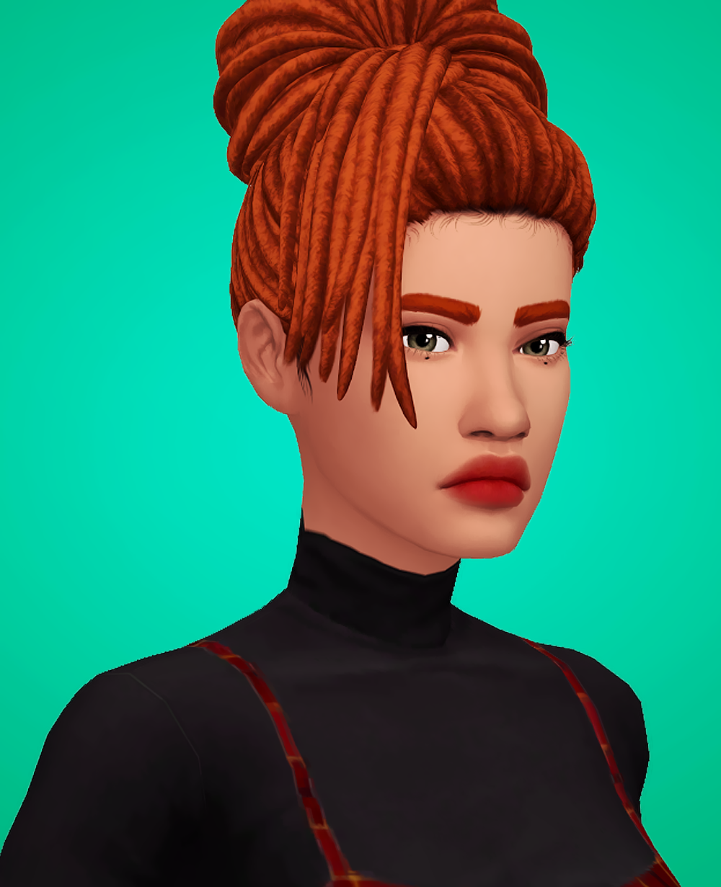
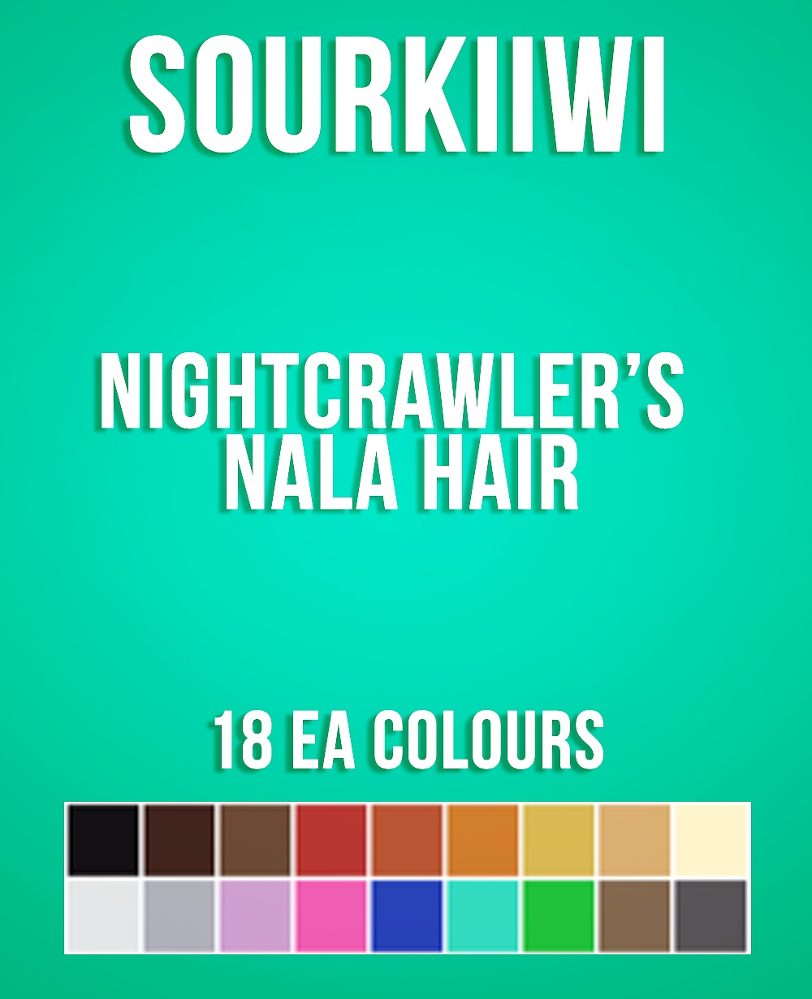
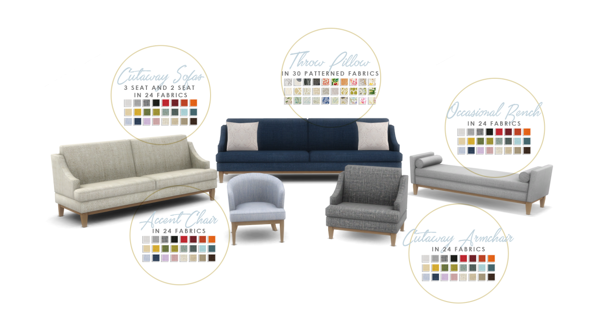
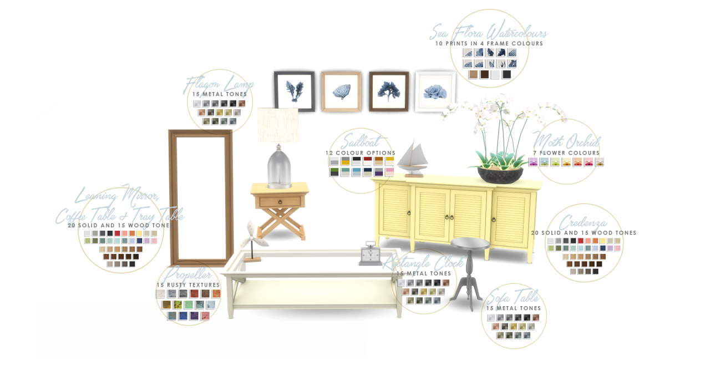
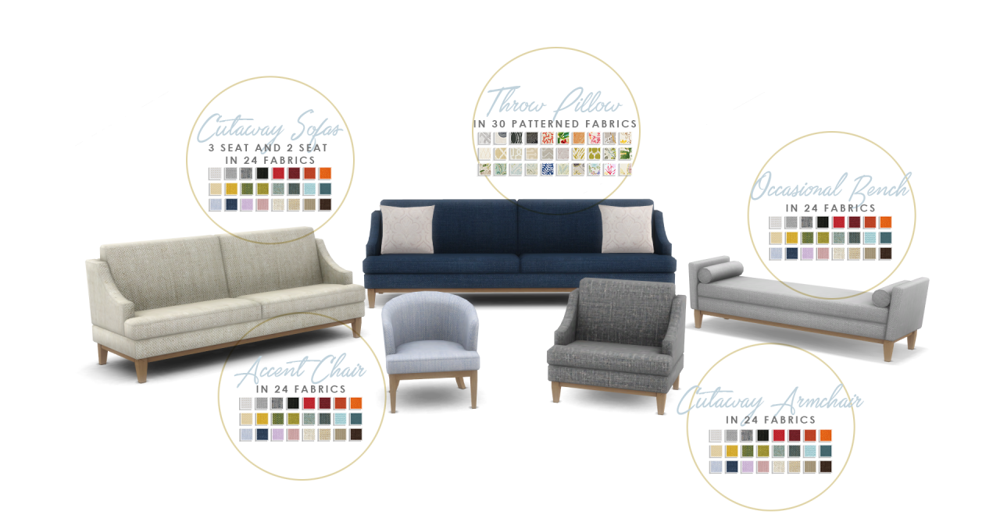
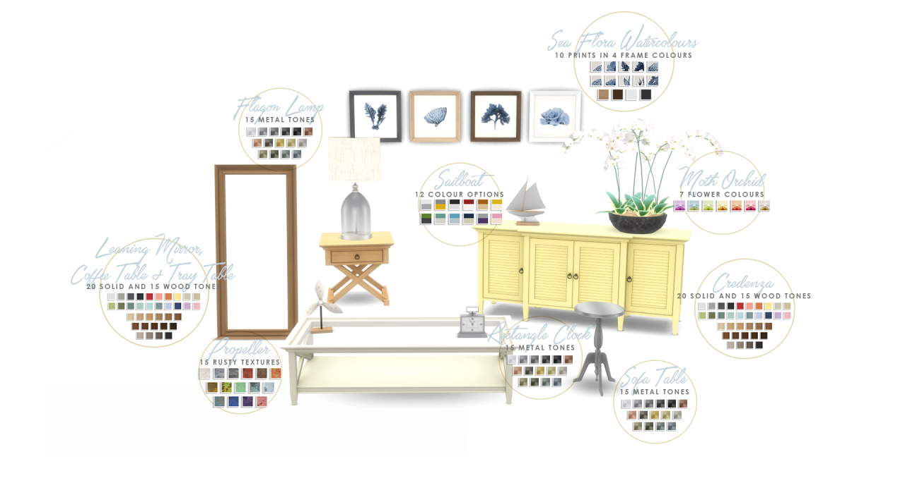
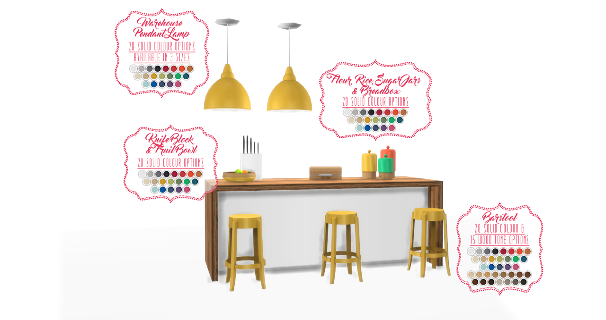
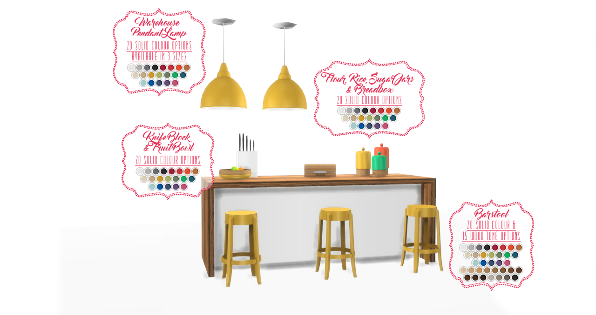

6/25/2018




6/25/2018
6/25/2018
A new hairstyle ‘Arianna’ for your female sims!
I hope you enjoy it! C:
Credits: @grimcookies for the base mesh and textures; EA.
Please check @grimcookies Aubrey hair!
Made with Sims4 Studio.
DOWNLOAD HERE
6/23/2018


 




With all the building I have been doing in Windenburg, it has shown me just how much I needed to create some more classic-contemporary furniture that could be used in these coastal homes. I love Hamptons design, so I went about creating my own set of furniture and decor inspired by this style. The last classic/contemporary set I made was my Shaker kitchen which this is designed to be used with, along with my Bayside Bedroom. I do plan to make more furniture with less of a modernist feel, and this is the latest set with that goal in mind. I hope you all enjoy it as much as me.
Due to the length of these posts and for ease of updating, you can find the download and info under the cut.
6/23/2018


 



Well, I think I out-did myself this time. I seem to be taking on ever-increasingly complex sets that get bigger as I get more experience. As you can see, a kitchen is probably one of the most complex sets you can make for The Sims 4. Totalling just over 51 unique meshes in 38 package files, this by far outstrips Atwood Living for my biggest set to date. I will probably hold that title for some time to come. I has been a labour of love, and I hope that dedication shows in the final product. I am usually at a point when i finish these projects that I never want to see my content again. However, that is not the case with this kitchen. I still love using it, despite the amount of agony it has caused me. So I hope you all enjoy it at least as much as me (which is a lot).
6/23/2018


Fireplaces in TS4 are one of the most neglected categories. We only got 3 styles, and in my opinion, only 1 of them was usable. I created the Look At Me Fireplace to bring that count up to two, and this one will bring it up to 3. That makes me happy. I love fireplaces as a focal point of a room (even though they can set a house on fire), so i think I am about done improving them now I have a good selection for myself.
The Build/Buy items feature:
The archive contains the package file and cover image. Just place in your mods folder and look for them in your game. I hope you enjoy.